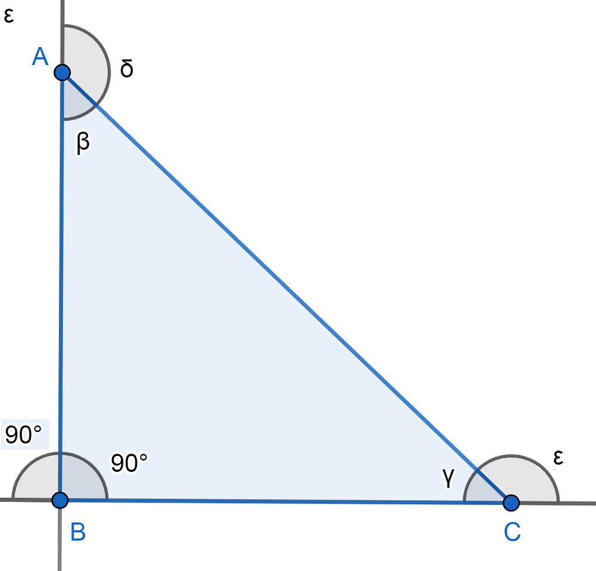

Rectángulo
El triángulo rectángulo es aquel que tiene un ángulo interior que es recto, es decir, mide 90º.
Este tipo de triángulo es una de sus clasificaciones de acuerdo a la medida de sus ángulos interiores.
La principal característica del triángulo es que, como ampliaremos más adelante, tiene un lado de mayor longitud (llamado hipotenusa) y otros dos denominados catetos cuya unión forma el ángulo recto.
Otro detalle a notar es que cualquier cuadrado separado en dos por alguna de sus diagonales se divide en dos triángulos rectángulos (como vemos en la imagen de abajo).
